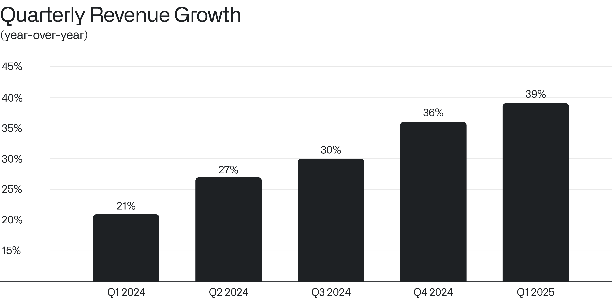
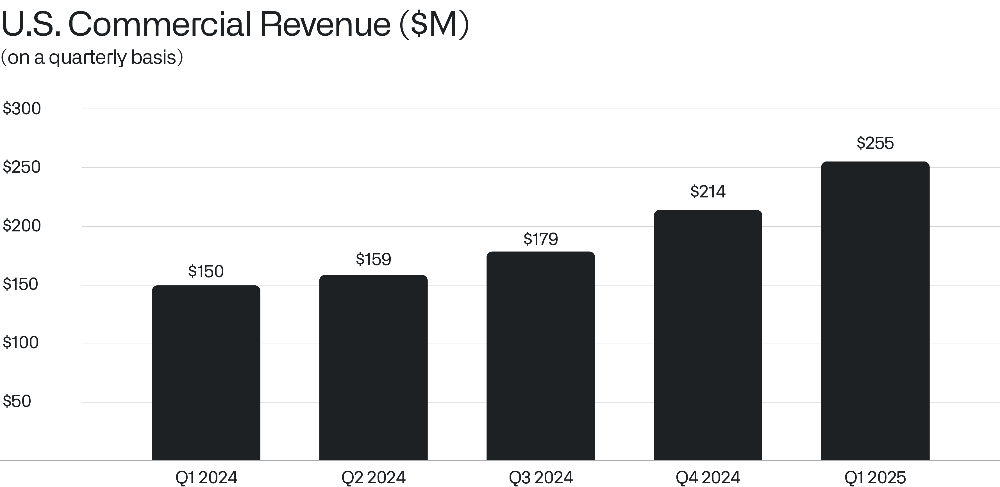
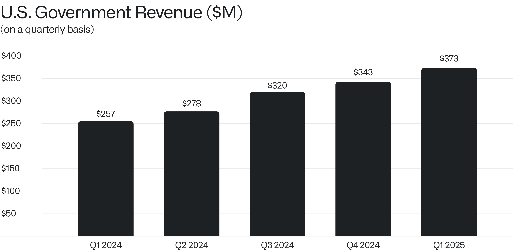

致股东的信
2025年5月5日

I.
我们承担了反复且巨大的风险来建立这家公司——如今回想起来，这些风险在许多人眼中几乎是审慎而平淡的。
在市场理解其价值或潜在应用之前，花费数年时间构建一个人工智能平台，曾屡遭嘲讽。
许多人持怀疑态度，甚至抱有敌意。早期投资者战战兢兢；他们的投入充其量往往是短暂的。
我们的业绩并非、也永远不会是我们业务广义价值的最终衡量标准。我们有着更宏大、更独特的目标。
然而，我们是足够敏锐的历史学习者，深知实力——尤其是那种能够使外国对手非自愿服从的实力——往往（不幸的是，确实如此）是向前推进的重要组成部分。
我们的财务表现——这一市场试图用来衡量世间价值的粗糙标尺——持续超越我们许多最高的期望。
我们在本年第一季度创造了8.84亿美元的营收，环比增长7%，同比增长39%。

这种迅猛而强劲的增长，对于一家规模仅为我们十分之一的公司来说都将是惊人的。而在我们这样的规模下，我们相信我们的攀升是无与伦比的。
正是我们本质上属于审美层面的直觉，以及我们愿意将品味的培养与熏陶作为一种美德——尤其是在构建软件和组建团队方面——推动了我们的崛起。
这类公司永远不会从委员会的头脑中诞生；如果我们屈从于美国企业界的传统管理模式，它绝不可能以目前的形式存续至今——数千名员工围绕手头的问题自行组织。
二、
对大语言模型的追捧，以及对能够使其为大型组织创造价值的基础软件架构的追逐，已经演变成一场狂潮。
曾经对这些新兴技术进行评估与考量的相对有序的过程，已演变为一场如饥似渴的采用旋风，越来越多的机构意识到这场席卷产业界和政府的变革之规模。
而这一变化在美国最为显著。
我们的美国总营收在本年前三个月同比增长55%，达到6.28亿美元，而来自美国客户的商业营收同期飙升71%，达到2.55亿美元。

同样，我们的美国政府营收在2025年前三个月同比增长45%，达到3.73亿美元，因为我们用于规划和执行特种部队及其他军事行动、以及用于评估和选择目标的软件系统，已获得美国国防部门的采纳。

这些并非渐进式的进步。 我们相信，我们的业绩表明一场革命正席卷我们的业务和整个行业。
三、
多年来，我们对武装美利坚合众国的兴趣——即确保其国防和情报机构拥有远比对手更致命、更精准的软件能力——这一本应毫无争议、近乎平淡无奇的目标，却被斥为政治敏感且不明智。
我们这些异端，这群形形色色的人物，曾被硅谷驱逐，几乎遭到抛弃。然而有迹象表明，硅谷内部的一些人如今已经转变态度，开始追随我们的脚步。我们只想指出，我们为美国军方、为那些我们请求奔赴险境之人打造软件的承诺始终坚定不移——无论这种承诺是否合乎时宜、是否便利。
近几十年来，建制派的共识已转向一种对美国事业和民族认同持怀疑态度的立场。
捍卫美国及其利益的信念被描绘为倒退；这个近期的时代逻辑认为，国家应当被允许凋零，自然消亡，而我们首要的忠诚应当转向全人类。
这样的愿望或许是崇高的，但也极其为时过早。我们保护至亲之人的利益，本不应被视为在道德上与推动和促进全人类的崛起相对立。
一个人若无法自立，便无法帮助他人；我们期望用于保护身边之人的力量，必须首先在我们自身之中扎根生长。
圣奥古斯丁于公元四世纪出生在罗马帝国的边缘地带，他提醒我们要承认并超越道德哲学中的这根核心芒刺，并正确地指出：援助所有人的抽象义务，并不妨碍我们履行对最亲近之人的义务。
“所有人都应被平等地关爱，”他写道，“但由于你无法善待所有人，你应当特别关注那些因时间、地点或境遇的偶然而与你联系更为紧密的人。”
四、
这家公司的文化始终是、并将继续是我们软件创造的前提条件。
我们建立的这家公司是一项共同的事业，毫不畏惧地培育和推进一种 世界观——一个由简短而不断演变的历史、话语模式以及共同信念凝聚在一起的共同体。
正是这种文化，允许并鼓励大约四千人以不断变换且往往奇特的组合团结在一起，为自身也为世界创造有价值的东西。
诚然，我们并非总是最令人愉快的合作伙伴。我们的表达可能过于抽象，令一些人望而却步。
然而，下一个篇章不属于批评者和旁观者——那些处于创造帝国边缘的人——而属于那些亲手建造帝国的人。
毫无疑问，无论是文化还是公司，包括我们所建立的这家，都必须在长期中“凭着它们的果实”来评判。《马太福音》7:16。
V.
正如许多人所言，这个国家的建制派不仅仅是随波逐流，而是已经失去了自信、从容和内在的决心。
除了自我关注之外，大部分建制派究竟珍视什么，并不十分清楚。
而知识阶层，即我们新的教育和文化贵族，比以往的贵族阶层更加根深蒂固、更具韧性，而后者的地位曾更为不稳。
“除了出身，贵族无需解释其掌权的正当性，”米歇尔·维勒贝克——这位冷嘲热讽却洞察入骨的法国作家——在去年的一次采访中说道，“而当代精英则宣称自己在智识和道德上的优越性。”
对保护弱势群体的同情与关切，以及不论出身贵贱、为所有人无情地追求机会的精神，曾定义了一场正义而富有成效的政治运动，如今却被搁置一旁，取而代之的是一种表演性的政治——其最狂热的拥护者往往更热衷于表明自己属于某个阶层——这已让广大公众感到厌倦。
当没有衡量标准、没有意愿去度量和量化一场政治运动或政策的成败，也没有求知欲去评估一种意识形态或世界观是否为其支持者带来了实际成果时，我们必须勇于揭露那些自诩的引路人其实是腐败的。
这一论点以及更广泛的批评在以下著作中有更深入的阐述 《The Technological Republic》，该书开篇引用了哈佛大学迈克尔·桑德尔一句至今仍然切中要害的提醒：“原教旨主义者冲进了自由主义者不敢涉足之地。”
事实上，如果我们不采取行动，不去明确阐述技术能够实现什么，市场那不受引导的逻辑就会替我们做出决定；它将填补由于我们当代人怯于定义我们作为一个民族是谁、我们渴望创造什么而裂开的鸿沟。
我们一直并且始终愿意与任何人合作，无论其背景或派别如何，只要他们愿意对自己负责，愿意量化和衡量自己的产出。我们寻求的合作伙伴，应当有兴趣摒弃作秀、追求实效，并且愿意在一定程度上宽恕那些初衷足够高尚之人的过失与错误。
未来不属于那些自诩为创造者的人，甚至也不属于仅仅有勇气的人，而是属于那些真正建造出坚实而持久之物的人。
怀疑者和愤世嫉俗者，那些不冒任何风险却妄加质疑的人，那些嘲讽他人工作、自己却连装装样子去构建点什么都不肯的人，终将被扫到一边。
1974年8月9日，也就是理查德·尼克松辞去总统职务的那一天，他对幕僚们说，提醒我们“永远不要小气”。他还说：“永远记住，别人可能会恨你。但恨你的人并不会赢，除非你也恨他们。而那样，你就毁掉了你自己。”
此致，

Alexander C. Karp
首席执行官兼联合创始人
Palantir Technologies Inc.
前瞻性声明
本函包含符合1995年《私人证券诉讼改革法》“安全港”条款定义的“前瞻性陈述”，包括但不限于有关我们的财务展望、产品开发及相关时间安排、分销和定价、我们软件平台的预期效益和应用、业务战略和计划（包括与我们的 Artificial Intelligence Platform（“AIP”）相关的战略和计划、销售和营销工作、销售团队、合作伙伴关系和客户）、对我们业务的投资、市场趋势和市场规模、机遇（包括增长机遇）、我们对现有及潜在投资以及与各实体商业合同的预期、我们对宏观经济事件的预期、我们对股票回购计划的预期以及定位的陈述。这些前瞻性陈述是在其首次发布之日作出的，基于当时的预期、估计、预测和推断，以及管理层的信念和假设。诸如“指导”、“预期”、“预计”、“应该”、“相信”、“希望”、“目标”、“规划”、“计划”、“目标”、“估计”、“潜在”、“预测”、“可能”、“将”、“或许”、“可以”、“打算”、“应”等词语，以及这些词语的变体或其否定形式和类似表述，均旨在识别这些前瞻性陈述。前瞻性陈述受诸多风险和不确定性的影响，其中许多涉及超出我们控制范围的因素或情况。由于多种因素，我们的实际结果可能与前瞻性陈述中明示或暗示的结果存在重大差异，这些因素包括但不限于我们向美国证券交易委员会（“SEC”）提交的文件中详述的风险，包括我们截至2024年12月31日财年的10-K表格年度报告，以及我们可能不时向SEC提交的其他文件和报告，包括提供我们截至2025年3月31日财季收益新闻稿的8-K表格当前报告，以及我们截至2025年3月31日财季的10-Q表格季度报告。特别是，以下因素（除其他因素外）可能导致我们的结果与此类前瞻性陈述明示或暗示的结果存在重大差异：我们成功执行业务和增长战略的能力；我们的可用资金是否足以满足流动性需求；市场对我们平台、产品和服务总体上的需求；我们增加新客户数量及从客户获得收入的能力；我们能否将客户合同的全部或部分合同价值实现为收入，包括客户可选择的合同选项或受便利终止条款约束的合同期限；我们漫长且不可预测的销售周期；我们与第三方成功执行渠道销售和其他战略举措的能力；我们保留和扩大客户群的能力；我们未来各季度经营业绩和关键业务指标的波动；我们业务的季节性；我们平台的实施过程可能复杂且耗时；我们成功开发和部署新技术以满足现有或潜在客户需求的能力；我们使平台和产品更易于安装、使用和消费的能力；我们维护和提升品牌及声誉的能力；随着业务增长以及追求业务和财务目标，我们维护和提升企业文化的能力；有关我们或我们领导层的新闻或社交媒体报道，包括但不限于呈现或依赖不准确、误导性、不完整或具有其他损害性信息的报道；近期或未来的全球宏观经济和地缘政治事件的影响，例如持续的俄乌冲突、以色列及更广泛的中东冲突、利率上升、货币政策变化、外币波动，或关税征收或对贸易关系的其他影响对我们公司或现有或潜在客户和合作伙伴的业务和运营造成的影响；在我们的平台中使用人工智能所引发的问题；以及我们或客户或第三方数据遭到的任何泄露或访问。
本信函中包含的前瞻性陈述仅代表我们在本信函发布之日的观点。我们预计后续事件和发展将导致我们的观点发生变化。我们不承担更新或修订任何前瞻性陈述的意图或义务，无论是基于新信息、未来事件还是其他原因。不应将本信函发布之日之后的任何日期的前瞻性陈述视为代表我们的观点。过往业绩并不必然预示未来结果。
其他说明
本信函可能包含某些非GAAP财务指标。我们对这些指标的定义可能与其他公司使用的定义不同，因此可比性可能有限。此外，其他公司可能不会发布这些或类似的指标。而且，这些指标存在一定的局限性，因为它们不包括我们合并经营报表中反映的某些费用的影响。因此，这些非GAAP财务指标应作为根据GAAP编制的指标的补充来考虑，而不应替代这些指标或与之割裂来看。我们通过提供这些非GAAP财务指标与最可比GAAP指标的调节表来弥补这些局限性，相关调节表可在我们的投资者演示文稿和/或财报发布中查阅，这些材料可在我们的投资者关系网站（investors.palantir.com）上获取。我们鼓励投资者及其他人士完整审阅我们的业务、经营业绩和财务信息，不要依赖任何单一财务指标，并将这些非GAAP财务指标与最直接可比的GAAP财务指标结合来看。
本信函可能包含基于独立行业出版物或其他公开信息以及基于我们内部来源的其他信息的统计数据、估算、预测和陈述。这些信息涉及许多假设和局限性，请勿过度依赖这些估算。我们未独立验证这些行业出版物和其他公开信息中所含数据的准确性或完整性。因此，我们不对该等数据的准确性或完整性作出任何陈述，也不承诺在本信函日期之后更新该等数据。本信函在讨论我们的业务时可能提及各种增长率。除非另有说明，这些增长率反映的是同比比较。
收到本信函即表示您确认，您将自行负责对市场及我们的市场地位进行评估，并将自行开展分析，且全权负责就所提供的信息（包括关于我们业务潜在未来表现的信息）形成自己的观点。